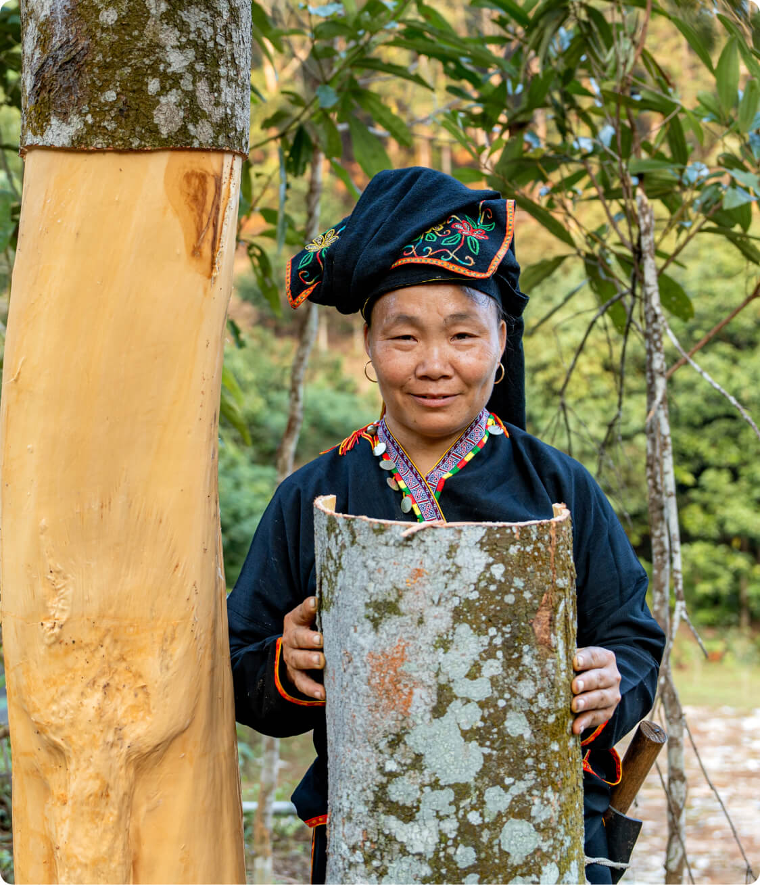
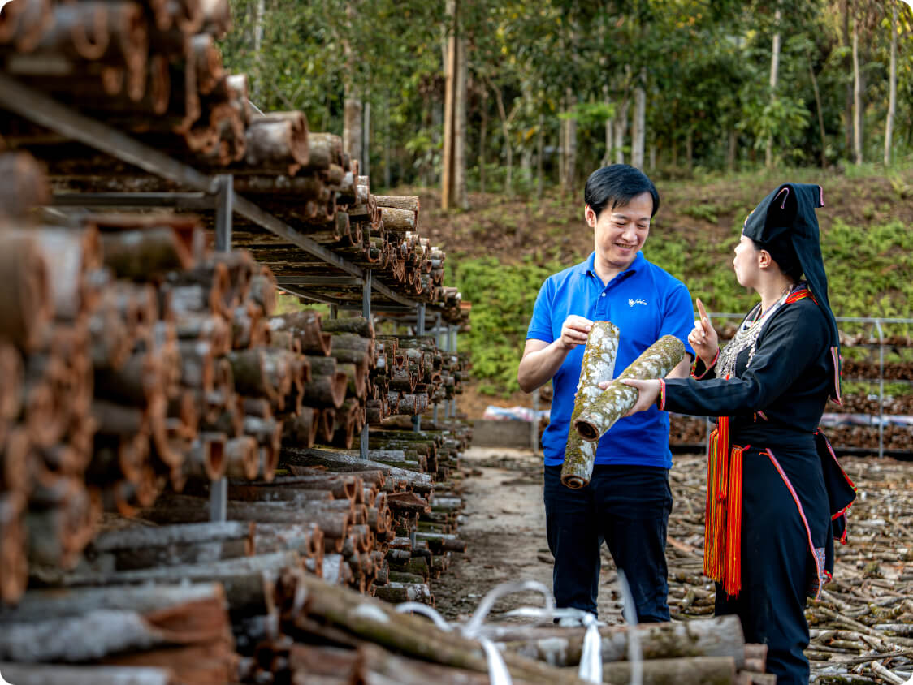

Organic Project
Crafting a Flavorful Tomorrow: Son Ha's Commitment to Ethical Spice Production for a Sustainable Future
Dedicated to Organic Excellence: Son Ha Spice's Integrated Closed-Loop System, Nurturing a Sustainable Future Since 2003
By adhering to these rigorous organic principles, we not only cultivate exceptional spices but also contribute to a more sustainable and equitable future for Vietnamese agriculture. Our multi-regional approach not only yields high-quality products but also fosters long-term partnerships with farmers, empowers local communities, and actively contributes to the preservation of Vietnam's rich biodiversity
Son Ha Spice is unwavering in its commitment to organic integrity, having established a closed-loop system that seamlessly spans the entire organic value chain — from farm to factory. Since our inception in 2003, we have meticulously overseen every stage of production, including cultivation, harvesting, storage, delivery, and processing. This steadfast commitment ensures comprehensive traceability through well-documented procedures.
Organic Certifications

USDA Organic Certification

EU Organic Certification

Ensuring ethical supply chains
Our commitment to ethical and sustainable sourcing extends beyond individual farms. We have established a comprehensive system for certified organic cultivation of pepper, cinnamon, and star anise across multiple regions in Vietnam, including Lao Cai, Yen Bai, Quang Ninh, Lang Son, Binh Phuoc, and the Central Highlands provinces. This strategic approach ensures a consistent supply of high-quality organic spices while supporting local farmers and communities. Our stringent organic production protocol oversees every stage, from planting to processing, ensuring the integrity and superior quality of our certified organic spices
Our Organic Cinnamon certified value chain
1,593
Households
6,619.1
Hectares
18
Agents
02
Environmentally-Conscious Processing Facilities for Sustainable Development
Ethical & Responsible Sourcing
Creating sustainable food systems demands large-scale collaboration. Our network of 2,000 farmers in diverse certified areas embodies this principle. We empower these communities through training in organic practices, promoting healthier soils and ecosystems. Rigorous monitoring, adherence to international standards, and advanced technology ensure top product quality. With meticulous documentation, we offer transparent traceability, connecting you with the land and its dedicated stewards
